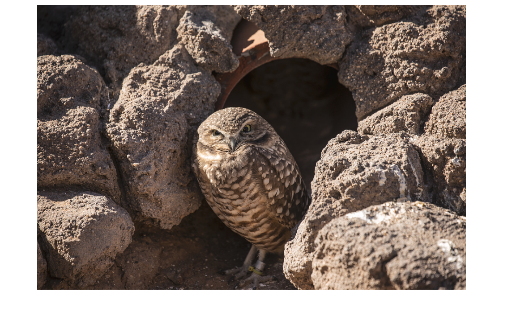

Aves-tamientos
Registrarse
Formulario de Avistamiento
Lista de Avistamientos
Página de Estadísticas

"A young burrowing owl has found a haven in a storm pipe at the Phoenix Zoo, Arizona." — Fotografía por Carol M. Highsmith (2018).